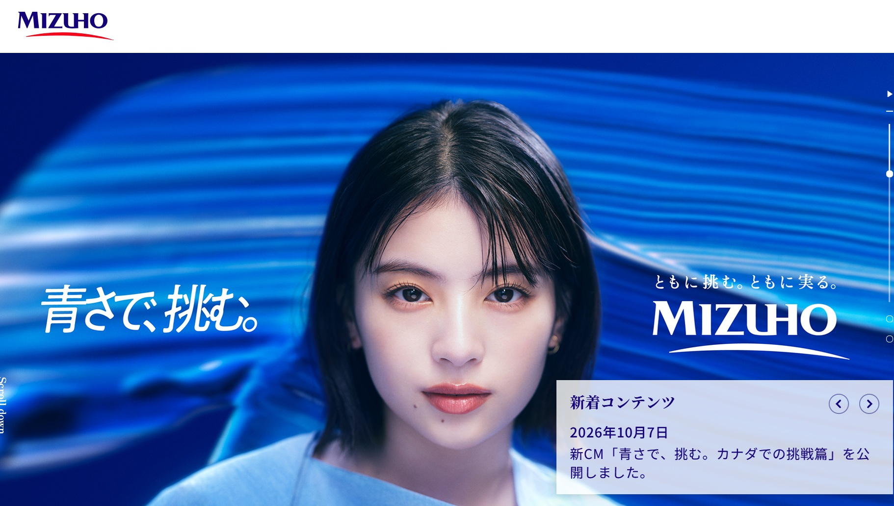
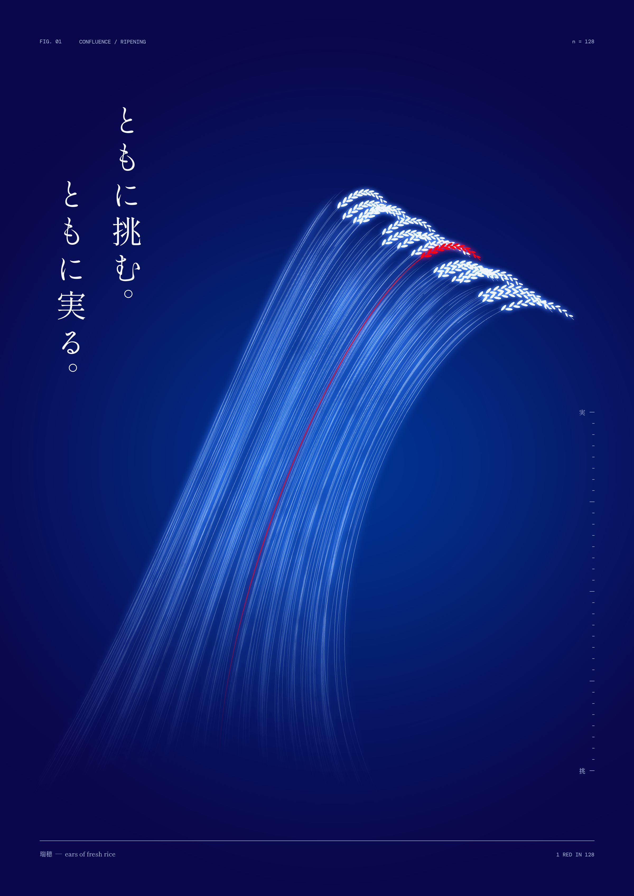
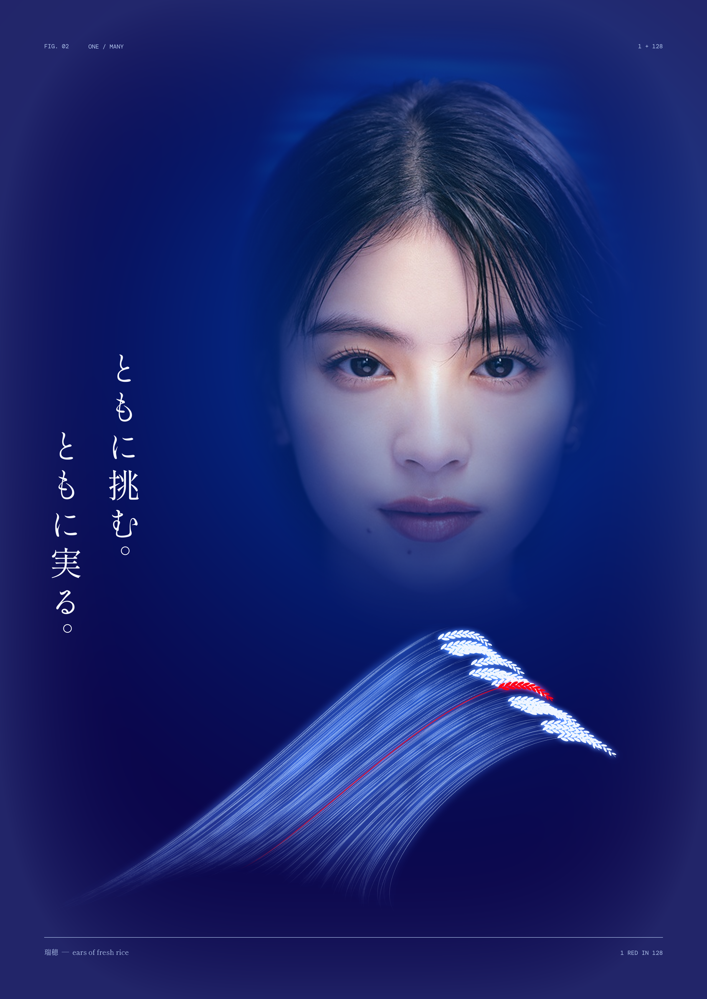

theme-sample / sample.html
THEME
Aosa Wave テーマ
Color theme for documents
参照画像の配色を6色のトークンに整理し、週次レポートのサンプルHTMLに適用したテーマです。藍から青へのグラデーション帯を見出し部に使い、赤は大見出し下の線だけに限っています。
Design Proposals · Project Overview
キャンペーンビジュアル「青さで、挑む。」を手がかりに、コーポレートメッセージ「ともに挑む。ともに実る。」を、配色テーマとポスターの2つの形で表現したデザイン検討の記録です。
出発点となったキャンペーン画像と、そこから抽出した配色です。

深い藍から明るい青へ流れる光の筋、白い文字、そしてロゴ下の一筋の赤。この「青の深度＋一点の赤」という構造を、すべての成果物の共通言語にしています。
#0b064b#011c6b#0150c5#016ad5#cdd7ed#fd0018配色テーマから始め、抽象表現のポスター、人物を取り込んだポスターへと展開しました。
Color theme for documents
参照画像の配色を6色のトークンに整理し、週次レポートのサンプルHTMLに適用したテーマです。藍から青へのグラデーション帯を見出し部に使い、赤は大見出し下の線だけに限っています。

Abstract poster · 2400 × 3394 px
128本の細い光の筋が、左下でばらばらに生まれて中央で合流し、頂で稲穂になって頭を垂れます。「ともに挑む」を上昇と合流、「ともに実る」を実りの重みで表しました。群れの中に1本だけ赤い筋と赤い穂が混ざります。
コピーは明朝体（Shippori Mincho）の縦組みです。ロゴは入れていません。

Portrait poster · 2400 × 3394 px
参照画像の人物を、輪郭を切り抜かずに青へ溶け込ませて右上に配置しました。手前を光の流れが左下から対角に横切り、人物の足元で稲穂となって頭を垂れます。「個は群れに支えられてこそ前を向く」という対比を一枚に収めています。
デザインの考え方をレビューで見直し、肖像を右上寄りに、画面の縁にごく淡い白みのグラデーションを加えて再描画済みです。
ポスター2点に通っている設計上の約束事です。
光の筋の本数。一本一本は細く、ともに動くことでひとつの流れになります。
筋の先に実る稲穂。社名の由来「みずみずしい稲穂」と、「実るほど頭を垂れる稲穂かな」を重ねています。
群れの中のただ1本の赤。参照画像の赤い差し色を受け継ぎ、目立ちすぎずに確かに存在します。
コピーは明朝体の縦組み。流れの対角線、眼差しの水平線と三方向で画面を支えます。
日本の花火を、共通モチーフの言葉で組み直した生成アートです。シードを変えるたびに違う夜が開きます。考え方は hanabi-philosophy.md にまとめています。
各ポスターは「デザインの考え方（philosophy.md）を書く → 描画する → 磨き込む」の順で制作しています。
本プロジェクトの成果物は社内のデザイン検討用の試作です。